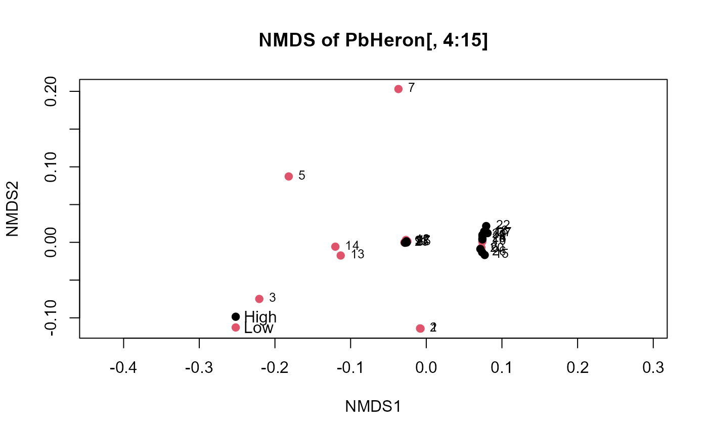

Plots an NMDS of a matrix of 0s and 1s, the censoring indicator columns for multiple variables, to discern the pattern of data below vs. above the detection limit. With multiple detection limits within a column, re-censoring to the highest limit in the column must be done prior to running this function. May have different censoring levels in different columns.
binaryMDS(dat.frame, group = NULL, title = NULL, legend.pos = "bottomleft")
Arguments
| dat.frame | A data frame containing only the columns of 0/1 values. |
|---|---|
| group | Optional grouping variable. Sites will be represented by different colored symbols for each group. |
| title | Optional title for the NMDS graph. |
| legend.pos | When group is specified, determines the location of the legend on the graph showing the colors representing each group’s data. Default is “bottomleft”. Alternatives are “topright” and “centerleft”, etc. |
Value
Plots an NMDS of censored data represented as the binary Above vs Below a detection limit for each parameter.
Details
Binary data may not provide sufficient information to discern differences in location on the plot if sample size is small. Prior to running this analysis it is suggested to consult best analysis practice when performing NMDS. As a rule of thumb, an NMDS ordination with a stress value around or above 0.2 is deemed suspect and a stress value approaching 0.3 indicates that the ordination is arbitrary. Stress values equal to or below 0.1 are considered fair, while values equal to or below 0.05 indicate good fit.
References
Helsel, D.R., 2011. Statistics for Censored Environmental Data using Minitab and R, 2nd ed. John Wiley & Sons, USA, N.J.
See also
Examples
#> Run 0 stress 9.202781e-05 #> Run 1 stress 5.215399e-05 #> ... New best solution #> ... Procrustes: rmse 0.08145068 max resid 0.2437797 #> Run 2 stress 5.248582e-05 #> ... Procrustes: rmse 0.1095925 max resid 0.3156595 #> Run 3 stress 9.636584e-05 #> ... Procrustes: rmse 0.1168464 max resid 0.1745211 #> Run 4 stress 9.668213e-05 #> ... Procrustes: rmse 0.05381145 max resid 0.171439 #> Run 5 stress 0.04650387 #> Run 6 stress 4.484104e-05 #> ... New best solution #> ... Procrustes: rmse 0.01947791 max resid 0.03778588 #> Run 7 stress 0.0008385034 #> Run 8 stress 0.05911466 #> Run 9 stress 0.05574189 #> Run 10 stress 0.0002023722 #> ... Procrustes: rmse 0.08636116 max resid 0.2360349 #> Run 11 stress 0 #> ... New best solution #> ... Procrustes: rmse 0.03106244 max resid 0.1014902 #> Run 12 stress 0.07002519 #> Run 13 stress 0.04186816 #> Run 14 stress 0.04374122 #> Run 15 stress 8.871544e-05 #> ... Procrustes: rmse 0.02548211 max resid 0.07890825 #> Run 16 stress 8.019225e-05 #> ... Procrustes: rmse 0.1200295 max resid 0.3360453 #> Run 17 stress 0.001191335 #> Run 18 stress 0.0579734 #> Run 19 stress 9.379246e-05 #> ... Procrustes: rmse 0.1120606 max resid 0.3358354 #> Run 20 stress 0 #> ... Procrustes: rmse 0.1174075 max resid 0.3436832 #> *** No convergence -- monoMDS stopping criteria: #> 8: no. of iterations >= maxit #> 10: stress < smin #> 2: stress ratio > sratmax#> Warning: stress is (nearly) zero: you may have insufficient data#># With Group argument binaryMDS(PbHeron[,4:15],group=PbHeron$DosageGroup)#> Run 0 stress 9.202781e-05 #> Run 1 stress 9.789276e-05 #> ... Procrustes: rmse 0.1081153 max resid 0.2515593 #> Run 2 stress 0.05797328 #> Run 3 stress 0 #> ... New best solution #> ... Procrustes: rmse 0.05376114 max resid 0.1715295 #> Run 4 stress 9.481935e-05 #> ... Procrustes: rmse 0.1295238 max resid 0.3071093 #> Run 5 stress 9.756426e-05 #> ... Procrustes: rmse 0.1071173 max resid 0.2690496 #> Run 6 stress 3.785053e-06 #> ... Procrustes: rmse 0.02632724 max resid 0.05545704 #> Run 7 stress 0 #> ... Procrustes: rmse 0.02524149 max resid 0.08269285 #> Run 8 stress 0.05797329 #> Run 9 stress 0.05797321 #> Run 10 stress 0.05926778 #> Run 11 stress 0 #> ... Procrustes: rmse 0.04209702 max resid 0.1123111 #> Run 12 stress 0.001849104 #> Run 13 stress 8.988837e-05 #> ... Procrustes: rmse 0.02060557 max resid 0.04441905 #> Run 14 stress 0.0002117601 #> ... Procrustes: rmse 0.05199627 max resid 0.175558 #> Run 15 stress 8.698919e-05 #> ... Procrustes: rmse 0.04042953 max resid 0.08023905 #> Run 16 stress 0.04707708 #> Run 17 stress 0.05797326 #> Run 18 stress 0.00204676 #> Run 19 stress 0.0001953699 #> ... Procrustes: rmse 0.1267913 max resid 0.2606174 #> Run 20 stress 0.04707704 #> *** No convergence -- monoMDS stopping criteria: #> 5: no. of iterations >= maxit #> 9: stress < smin #> 6: stress ratio > sratmax#> Warning: stress is (nearly) zero: you may have insufficient data#># }